adb가 PATH에 있어야 합니다. 저장된 로그 파일만 보려면 adb는 없어도 됩니다.dist\KLogFilter.bat [로그파일] ← 권장 (설정 파일을 jar 폴더에서 읽고 씀) java -jar dist\KLogFilter.jar [로그파일]
로그 파일 경로를 인자로 주면 시작하면서 바로 엽니다. 설정 파일(LogFilter.ini 등)은 실행한 폴더에서 읽고 쓰므로 KLogFilter.bat으로 실행하거나 jar가 있는 폴더에서 실행하세요. 처음 화면에는 버전과 단축키 설명이 보이고, 버전별 변경 이력은 같은 폴더의 CHANGELOG.txt에 있습니다.
build.bat → dist\KLogFilter.jar (+ KLogFilter.bat, LogFilterCmd.ini, CHANGELOG.txt)
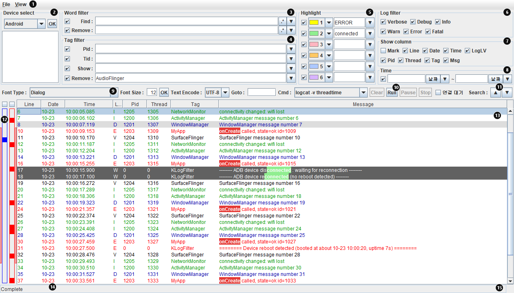
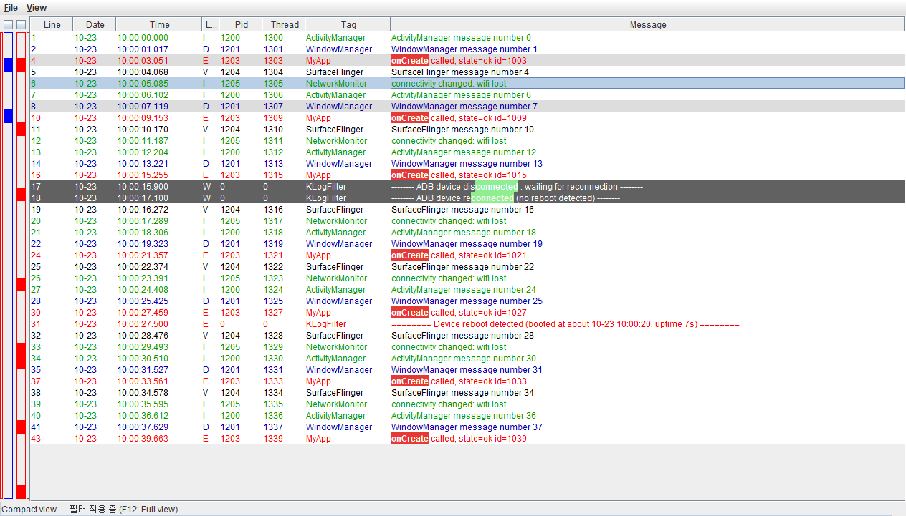
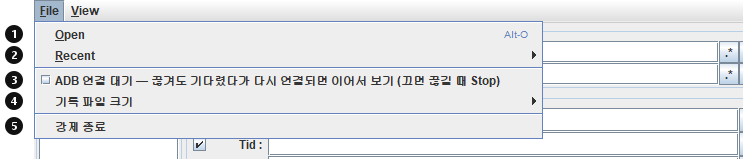
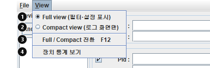
adb logcat -v threadtime · time · brief · process · tag (+ year · uid), 커널 로그(<4>[시간] msg), dmesg([시간] msg). 형식을 알 수 없는 줄은 메시지로 그대로 보입니다.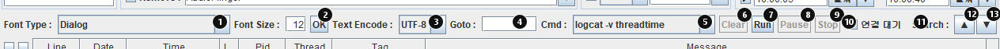
LogFilterCmd.ini(offline), (unauthorized)처럼 상태가 붙은 장치는 쓸 수 없습니다.logcat -v threadtime). 실제 실행은 adb [-s 장치] <명령>입니다.LogFilter_날짜_시각.txt에 기록되면서 화면에 바로 나옵니다.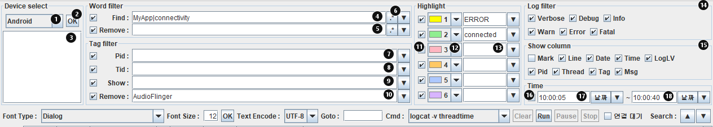
MyApp|connectivity, Remove 태그에 AudioFlinger, Time 10:00:05 ~ 10:00:40)모든 필터는 입력하는 즉시 적용되고, 각 줄 왼쪽의 체크를 끄면 그 조건만 잠시 끌 수 있습니다. 여러 단어는 |로 나누며(OR) 대소문자는 구분하지 않습니다.
| 필터 | 설명 |
|---|---|
| Find / Remove | Message 기준. .* 토글을 켜면 입력을 정규식으로 봅니다. |
| Tag Show / Remove | 로그 목록의 Tag 셀에서 Alt+좌클릭(Show) / Alt+우클릭(Remove)으로 바로 추가할 수 있습니다. |
| Time | 12:30, 12:30:15.500, 10-07 12:30, 2026-10-07 12:30 형식. 비우면 제한 없음. 날짜 버튼으로 고르거나, 로그 줄을 오른쪽 클릭해 "이 줄 시각을 Time 시작/끝으로"를 고를 수 있습니다. 날짜 없이 시작이 끝보다 늦으면 자정을 넘는 범위로 봅니다. |
Highlight(그림 6의 ⑪~⑬): 단어를 넣으면 로그 목록에서 그 단어가 배경색으로 표시됩니다(그림 7의 ERROR, connected). 입력창마다 색을 고르고 체크로 켜고 끕니다.
Search(그림 5의 ⑪~⑬): 필터와 별개로 메시지에서 줄을 찾아 선택합니다.
|로 나눕니다.onCreate). 끝에 닿으면 처음부터 이어서 찾습니다.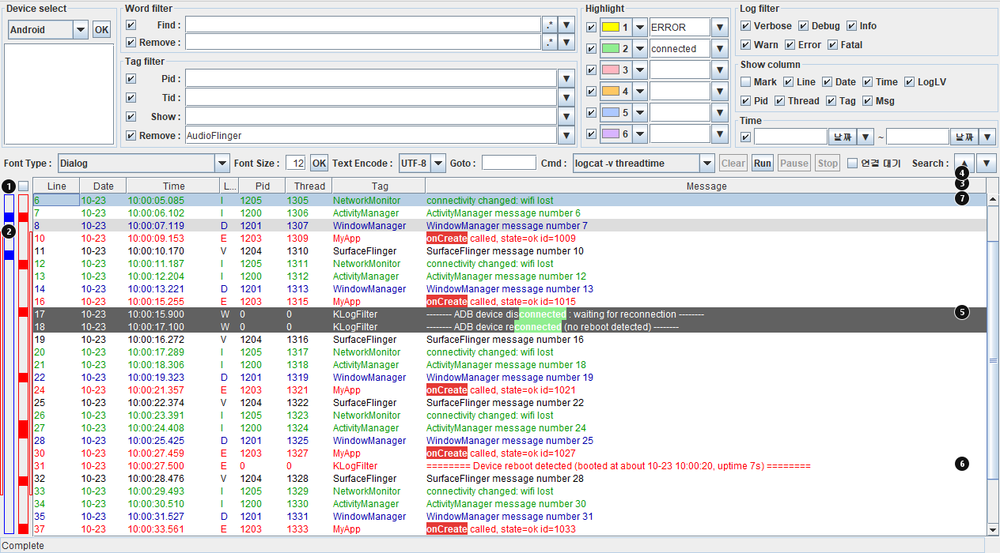
======== Device reboot detected … ======== 빨간 글자, 북마크(메모 "Reboot")| 동작 | 방법 |
|---|---|
| 북마크 켜기/끄기 | 줄을 더블클릭하거나 Ctrl+F2. Mark 컬럼에 메모 입력 |
| 아래(다음) / 위(이전) 북마크로 | F2 / F3 |
| 줄 번호로 이동 | 아래 바의 Goto에 줄 번호 |
| 처음 / 끝으로 | Home / End |
| 복사 | Ctrl+C: 선택한 줄들의 보이는 컬럼 |
| 포커스 이동 | Tab / Shift+Tab으로 다른 항목으로, 어디서든 Esc로 목록으로 |
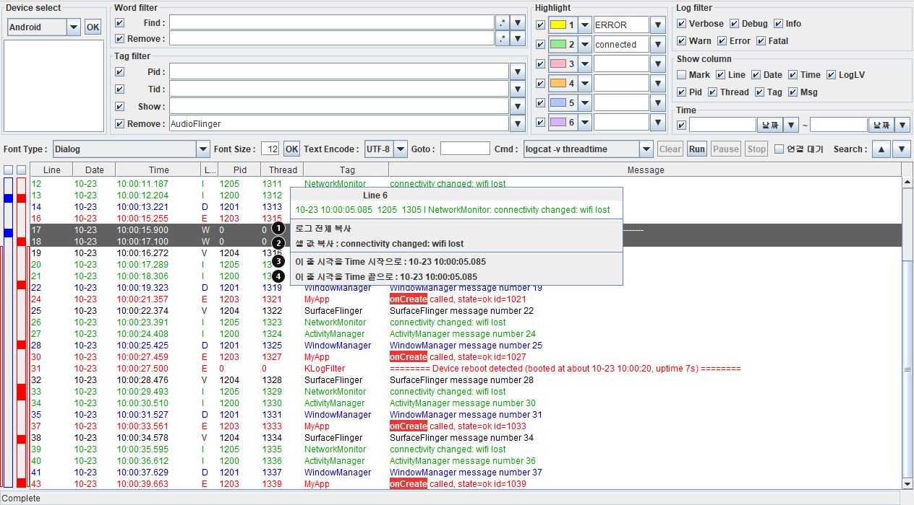
View > 장치 통계 보기(또는 상태 표시줄 오른쪽 클릭)로 통계 창을 엽니다. 숨겨도 측정은 계속됩니다.
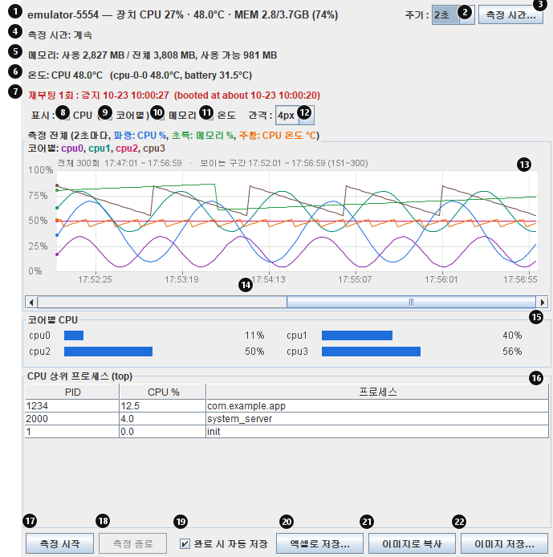
top으로 읽은 10개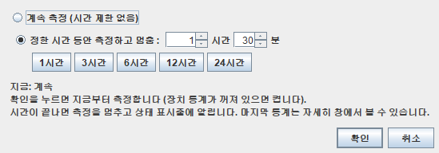
측정 기록은 최대 20만 회까지 보관하며 넘으면 오래된 것부터 버립니다. 표시 옵션과 주기·측정 시간·자동 저장 설정은 다음 실행에도 유지됩니다.
엑셀로 저장…(그림 9의 ⑳)을 누르면 측정을 켠 뒤의 전체 기록이 .xlsx로 저장됩니다. 완료 시 자동 저장(⑲, 기본 켬)이면 정한 측정 시간이 끝나거나 측정 종료를 누를 때 실행 폴더에 DeviceStats_날짜_시각.xlsx로 자동 저장됩니다. 외부 라이브러리 없이 만들며 Excel에서 바로 열립니다.
| 시트 | 내용 |
|---|---|
| 통계 | 측정마다 한 줄: 시각, 경과(초), CPU %, 메모리 %·사용·전체·사용 가능 MB, CPU 온도, cpu0~N %, 센서별 온도, 비고(재부팅 / 오류). 못 읽은 값은 빈 칸 |
| 그래프 | 통계 시트의 셀을 참조하는 엑셀 꺾은선 차트 3개 (아래 그림). 셀 값을 고치면 차트도 바뀝니다 |
| 메모리 상위 | 전체 기록에서 메모리 최고 점유가 큰 프로세스 5개의 시각별 MB (차트 자료) |
| 상위 프로세스 | 창이 열려 있어 top을 읽은 측정의 CPU 상위 프로세스 (시각 · PID · CPU % · 이름) |
| 메모리 상위 프로세스 | 측정마다 읽은 메모리 상위 10개 (시각 · PID · MB · 이름) |
| 정보 | 프로그램 버전, 장치, 측정 시작·끝, 주기, 측정 시간 설정, 측정·오류·재부팅 횟수, 재부팅 기록, 저장 시각 |
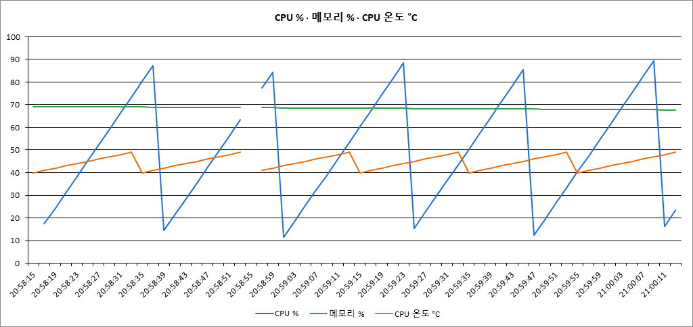
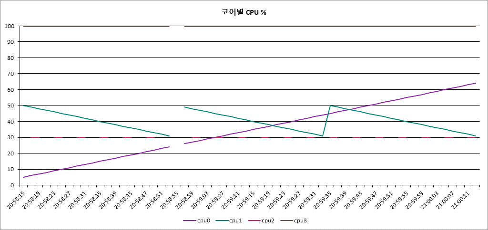
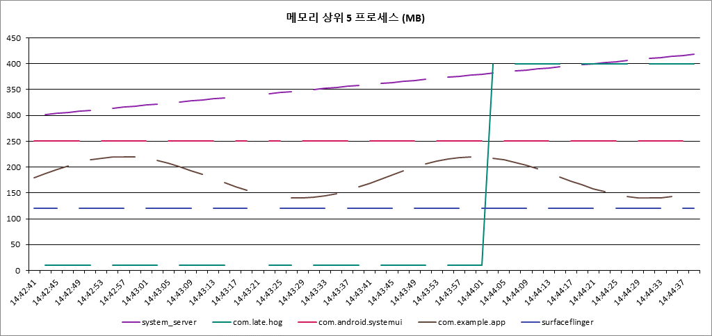
LogFilter_날짜_시각.txt에 UTF-8로 기록됩니다.이름_2.txt, _3.txt …에 이어서 기록합니다. 줄 중간에서 나누지 않습니다._2, _3은 따로).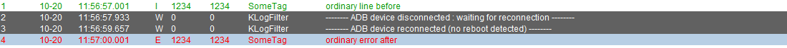
| 연결 대기 체크 | 동작 |
|---|---|
| 끔 (기본) | 케이블이 빠지거나 장치가 재부팅되어 연결이 끊기면 바로 Stop 됩니다. 기록 파일 끝에 -------- ADB device disconnected : logging stopped -------- 줄이 남고 상태 표시줄에 안내가 나옵니다. |
| 켬 | 끊겨도 수집 상태를 유지한 채 다시 연결될 때까지 기다렸다가 같은 화면·같은 기록 파일에 이어서 보여 줍니다. 끊김과 재연결 시점에 표시 줄이 들어가고, 재부팅이면 ======== Device reboot detected … ======== 줄이 북마크와 함께 들어갑니다. Stop으로 기다림을 중단할 수 있습니다. |
체크는 아래 바의 연결 대기(그림 5의 ⑩) 또는 File > ADB 연결 대기(그림 3의 ③)에 있으며 설정에 저장됩니다. 네트워크 장치(IP:5555)는 adb 서버가 다시 시작되면 연결이 끊기므로 명령 창에서 adb connect IP:5555로 다시 연결한 뒤 OK를 누르세요.
| 키 | 동작 |
|---|---|
| F2 | 아래(다음) 북마크로 이동 |
| F3 / Shift+F2 | 위(이전) 북마크로 이동 |
| Ctrl+F2 | 선택한 줄 북마크 켜기/끄기 (더블클릭과 같음) |
| F4 / Ctrl+F | 검색 입력창으로 |
| Enter / Shift+Enter (검색창) | 다음 / 이전 찾기 |
| Esc | 진행 중인 검색을 멈추고 로그 목록으로 포커스 |
| Tab / Shift+Tab (로그 목록) | 다른 항목으로 포커스 이동 |
| F12 | Full / Compact 화면 전환 |
| Home / End | 첫 줄 / 마지막 줄 |
| Ctrl+C | 선택한 줄 복사 (통계 창에서는 이미지 복사) |
| Ctrl+Z / Ctrl+Y (입력창) | 되돌리기 / 다시 실행 |
| ↑ / ↓, Alt+↓ (입력창) | 최근 입력 불러오기 / 목록 열기 |
| Alt+좌클릭 / 우클릭 (Tag 셀) | 태그를 Show / Remove 필터에 추가 |
| Ctrl+O | 파일 열기 |
모두 실행 폴더에 있으며, 없거나 키가 빠지면 기본값을 씁니다.
| 파일 | 내용 |
|---|---|
LogFilterCmd.ini | Cmd 콤보의 adb 명령 목록 (CMD_COUNT, CMD_0…). 직접 편집해 명령을 추가합니다. |
LogFilter.ini | 종료할 때 저장. 필터 문자열과 정규식 모드, 시간 범위, 입력 기록(HISTORY_*), 화면 모드(VIEW_COMPACT), 폰트, 창 크기·컬럼 폭, 하이라이트 6개, 장치 통계 설정(DEVICE_STATS_INTERVAL·DEVICE_STATS_DURATION·DEVICE_STATS_EXCEL_AUTO·DEVICE_STATS_GRAPH_CPU/MEM/TEMP/CORES), 연결 대기(WAIT_RECONNECT), 기록 파일 크기(LOG_FILE_MAX_MB) |
LogFilterColor.ini | 레벨별 글자색과 하이라이트 색(INI_HIGILIGHT_0~5) |
RecentFile.ini | 최근 파일 목록 |
CHANGELOG.txt | 버전별 변경 이력 (읽기용) |
| 증상 | 확인할 것 |
|---|---|
| Run을 눌러도 아무것도 안 나옴 | 상태 표시줄의 안내를 보세요. 장치가 offline/unauthorized이거나 여러 장치 중 고르지 않은 경우입니다. OK로 목록을 새로 고치고, 장치에서 USB 디버깅을 허용하세요. |
| "Waiting for device"가 계속 나옴 | adb가 장치를 찾지 못하는 상태입니다. Stop 후 adb devices로 확인하고 다시 Run. |
| 수집이 갑자기 Stop 됨 | ADB 연결이 끊긴 것입니다(기본 동작). 끊겨도 기다리려면 연결 대기를 켜세요. |
| 한글이 깨짐 | 파일을 열 때 Text Encode를 파일 인코딩에 맞추세요. adb 수집은 항상 UTF-8입니다. |
| 장치 통계가 비어 있음 | 통계 창의 측정 시작을 눌렀는지, 장치가 선택되어 있는지 확인하세요. 상위 프로세스 표는 창이 열려 있을 때만 채워집니다. |
| 설정이 저장되지 않음 | 설정은 실행한 폴더에 저장됩니다. KLogFilter.bat으로 실행하거나 jar 폴더에서 실행하세요. 강제 종료는 설정을 저장하지 않을 수 있습니다. |
| 엑셀 차트에 선이 끊김 | 그 측정에서 값을 못 읽었거나(오류·꺼진 코어) 그 프로세스가 상위 10개에 들지 않은 구간입니다. 정상입니다. |